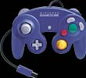

| いま、宮本さんは実際にソフトの制作にとりかかっているわけですが、作り手として、一番変わったと思うところはどこですか。 宮本 ハードの制限からゲームを考えるのではなくて、ゲームのほうを優先して考えられるということです。それなりにハードがついてくるようになりましたね。まだついてくるレベルなんですけどね。ただ、これ以上高性能になる必要もないと思うんです。 |
| ロクヨンの時にはできなかったことが実現できそうですか。 |
| 宮本 ロクヨンとゲームキューブの関係は、ファミコンとスーパーファミコンの関係と同じですよね。ファミコンの時は横にキャラクターが８つ以上並ぶと絵が消えるというのがあって、そこを苦労して作っていました。その制限が、スーパーファミコンの時にいっぺんになくなった。同じようなことが、やはりゲームキューブでも起こっていますね。 |
| なるほど。コントローラも、ロクヨンからさらに進化しました。 |
| 宮本 ええ。たぶん当分の間、一番スタンダードとなるコントローラじゃないかと思います。 |
| 宮本さんはロクヨンのときにコントローラのデザインにこだわったということでしたが、今回もかなり意見を出されたんですか。 |
| 宮本 そうですね。うちはわりとハードのデザインチームとソフトのチームがコミュニケーションをとりながら作っていくんです。僕が、というよりは、みんなで何度も練り直しをしていきました。ものすごく時間をかけて作りましたよ。今年５月のＥ３※の時点で量産品はできていたのに、またそれを作り直して、最後までチューンナップしましたから。バネの強さやスイッチのトップの形状を微妙に直していくと、やはり手触りがよくなったり悪くなったりするんですね。靴と一緒で、ちょっと悪いだけで足が痛くなってきたりするでしょう？ その感触は、具体的にゲームを作って使っていかないとわからないんです。最初は理論で組みたてますけど、やはりモデルができてから開発者が使いこんで、作り直していくんですね。 |